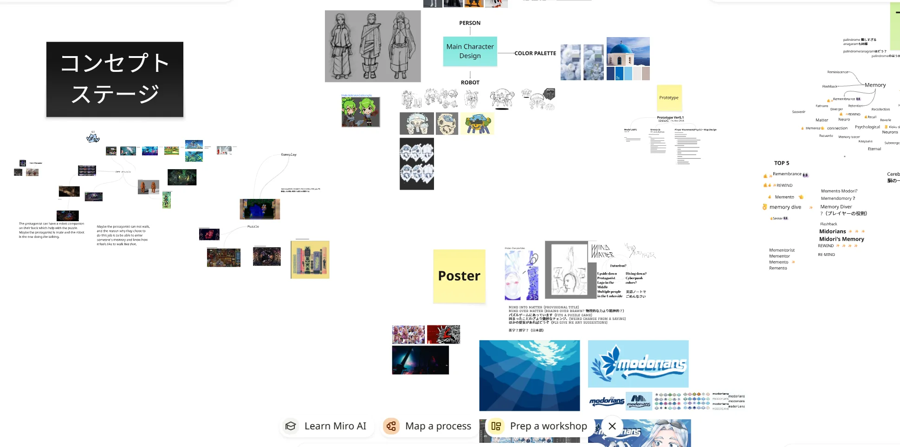

プレイヤー移動の実装
Unityを使用したプレイヤーの移動処理を担当しています。プレイヤーがステージ内を移動し、各エリアを探索できるよう、操作と移動に関わる部分を制作しています。
未来の世界で、
大切な記憶をたどる。
未来の世界を舞台に、若いModorianの少女と話好きなロボットの相棒が、地域の掲示板から依頼を受けて働きながら、祖母との大切な思い出を取り戻そうとするゲーム企画です。
 TEAM PLANNING MATERIALSUNITY / GROUP PROJECT
TEAM PLANNING MATERIALSUNITY / GROUP PROJECT少女とロボットの相棒が、依頼を通じて人々の記憶に向き合う。
企画資料では、主人公はローカルの掲示板から仕事を受けるフリーランサーとして描かれています。祖母の誕生日が近づくなか、祖母が二人で過ごした大切な日の記憶を失いつつあることを知り、記憶を取り戻す方法を探します。
チームでは、ストーリー、キャラクター、ステージ構成、ゲームプレイの仕組みをMiroで整理し、共通の企画資料として共有しています。

Unityを使用したプレイヤーの移動処理を担当しています。プレイヤーがステージ内を移動し、各エリアを探索できるよう、操作と移動に関わる部分を制作しています。
ゲーム内の各エリアのマップ設計を担当しています。倉庫、セキュリティルーム、迷路ルーム、最終保管庫というステージ案をもとに、空間の構成やプレイヤーの進行を考えながら設計を進めています。
ここでは本人が担当していると確認できた「プレイヤー移動」と「マップ設計」を個人の役割として記載しています。ストーリーやキャラクター、その他のゲームシステムはチーム全体の企画内容として紹介しています。
倉庫
セキュリティルーム
迷路ルーム
最終保管庫
主人公が選択したオブジェクトや出来事を約5秒巻き戻し、以前の状態に戻すという企画案。手掛かりの発見やパズルに活用する構想です。
ロボットがMemory Policeの能力を一時的にコピーし、敵への対処やパズルに利用するという企画案です。
パトロール、調査、追跡、捜索、巡回への復帰など、プレイヤーを発見した際の行動パターンを検討しています。
※ これらはMiroの企画・設計ボードに記載されたチーム全体のコンセプトです。仕様は開発の進行に応じて変更される可能性があります。個人の実装担当として記載しているのは、上記のプレイヤー移動とマップ設計です。
掲載しているMiro画像はチームの企画・設計資料です。最終的なゲーム画面や完成版の仕様を示すものではありません。